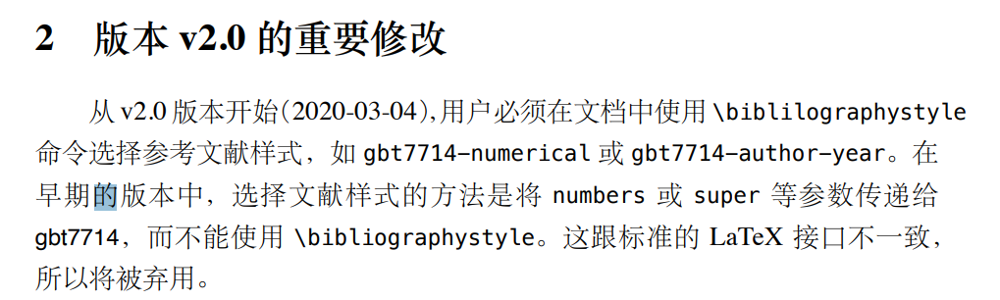

使用的发行版为0.5, 使用环境为ubuntu
卸载旧版本latex
1
2
3
4
5
6
|
sudo rm -rf /usr/local/texlive/*
sudo rm -rf /usr/local/share/texmf
sudo rm -rf /var/lib/texmf
sudo rm -rf /etc/texmf
sudo apt remove tex-common --purge
find -L /usr/local/bin/ -lname /usr/local/texlive/*/bin/* | sudo xargs rm
|
安装新版本latex
下载late镜像
加载镜像文件(注意，我的mnt目录下没有挂在其他东西)
1
|
sudo mount -o loop texlive.iso /mnt
|
启动安装程序
1
2
|
cd /mnt
sudo ./install-tl
|
卸载镜像文件
1
2
|
cd /
sudo umount /mnt
|
设置环境变量
在~/.bashrc的末尾加入如下路径，把2020换成对应的版本（2021）
1
2
3
|
export PATH=$PATH:/usr/local/texlive/2020/bin/x86_64-linux
export MANPATH=/usr/local/texlive/2020/texmf-dist/doc/man
export INFOPATH=/usr/local/texlive/2020/texmf-dist/doc/info
|
再source ~/.bashrc即可
修改sys-thesis代码
进入该目录，执行如下命令
1
2
3
4
5
6
7
8
9
|
sudo apt-get update
sudo apt-get install -y git language-pack-zh-hans language-pack-zh-hant
mkdir -p /usr/share/fonts/opentype
git clone https://github.com/a20185/adobefonts
chmod +x adobefonts/runner.sh
sudo adobefonts/runner.sh
fc-cache -f -v
sed -i 's/Times New Roman/Nimbus Roman No9 L/g' sysuthesis.cls
rm -Rf adobefonts
|
具体原因可参考.gitlab-ci.yml文件
验证是否成功
删掉文件main.pdf,执行命令 make pdf,查看生成的main.pdf和github上的原版内容是否相同
需要更新latex版本的原因
应该是bibtex的原因

使用19版本除了参考文献无法显示外，
\autoref也无法正常使用，但是更新到2021版本就无该问题。
Dockerfile中下载的texlive应该也不是新版！编译出错